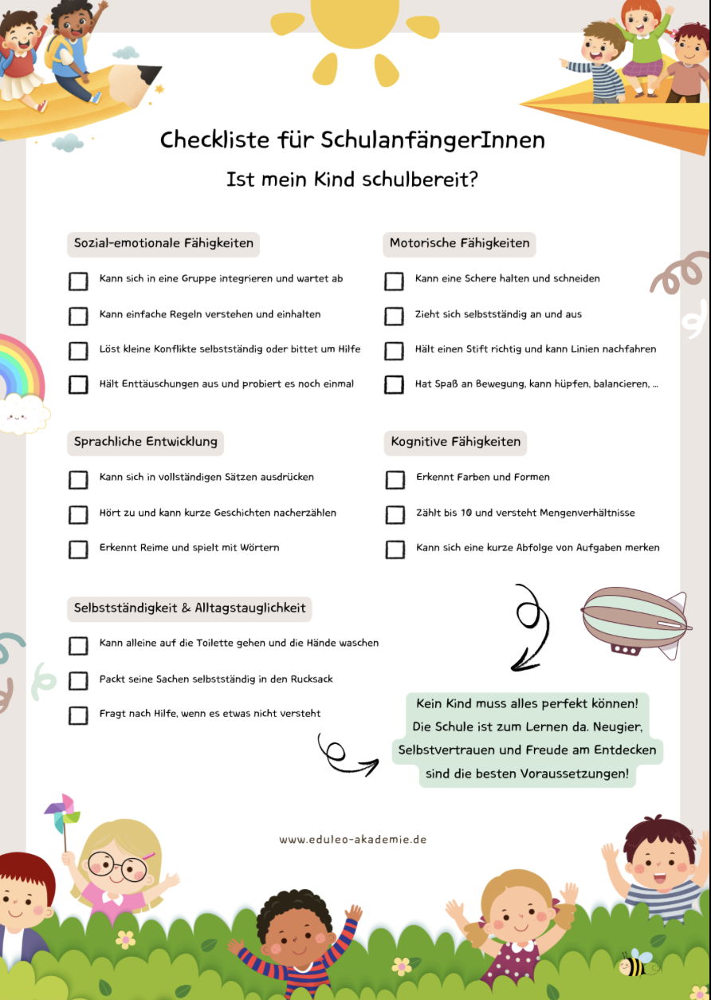

Die Vorschule ist der letzte große Schritt vor dem Schuleintritt — aufregend für Kinder und ErzieherInnen gleichermaßen. Doch wie gestaltet man Vorschularbeit wirklich sinnvoll? Ein strukturiertes Vorschulkonzept hilft dabei, alle Kinder optimal vorzubereiten — spielerisch, mit Bewegung und ohne unnötigen Druck.
Warum ein Vorschulkonzept?
Ohne Plan ist Vorschularbeit wie ein Puzzle mit fehlenden Randstücken — irgendwie chaotisch. Ein gutes Konzept sorgt dafür, dass Vorschularbeit gezielt, spielerisch und nachhaltig wirkt. Und keine Sorge: Ein Vorschulkonzept bedeutet nicht, dass Kinder plötzlich 45 Minuten still sitzen müssen. Spielerisches Lernen bleibt das A und O.
- Alle Kinder werden gezielt gefördert — von Zahlenfans bis zu kreativen Köpfen.
- Vorschularbeit bleibt spielerisch — Lernen ohne Langeweile.
- Eltern werden einbezogen — denn sie spielen eine wichtige Rolle.
- Der Übergang zur Schule klappt reibungslos — ohne Tränen am ersten Schultag.
Schritt für Schritt zum Vorschulkonzept
Bevor ein neues Konzept entsteht, lohnt sich ein Blick auf den aktuellen Stand. Frage dich und dein Team:
- Findet Vorschularbeit regelmäßig statt oder eher „wenn Zeit ist"?
- Gibt es feste Zeiten oder passiert alles spontan?
- Welche Methoden nutzt ihr bereits? (Bewegungsspiele, Lieder, Arbeitsblätter?)
- Was wünschen sich Eltern für die Vorschule?
Ein Vorschulkonzept definiert klar, was Kinder am Ende der Vorschulzeit können sollten — und das geht weit über Zahlen und Buchstaben hinaus:
- Sozial-emotionale Fähigkeiten: Freundschaften schließen, Konflikte lösen, sich konzentrieren
- Motorik: Stifthaltung, Schleifen binden, Balancieren
- Sprachliche Entwicklung: Wortschatz erweitern, Sätze bilden, Reime erkennen
- Kognitive Entwicklung: Zahlenverständnis, Mengen erfassen, logisches Denken
Ein fester Ablauf hilft dabei, Vorschularbeit konsequent und spielerisch umzusetzen. Ein bewährtes Beispiel ist das 5-Blöcke-Konzept der EDULEO Akademie:
- Gesprächsrunden: „Was passiert in der Schule?"
- Schulranzen gemeinsam packen
- Rollenspiele zum Schulalltag
- Buchstaben ertasten und legen (mit Sand oder Wolle)
- Zahlen-Memory und Würfelspiele
- Erstes Zahlenverständnis ohne Druck
- Lernspaziergänge: „Finde 5 Dinge, die mit B anfangen"
- Balancierspiele kombiniert mit Denkaufgaben
- Soziale Spiele: „Wie löse ich Streit?", „Wie bitte ich um Hilfe?"
- Selbstständig kleine Aufgaben übernehmen (Tisch decken, aufräumen)
- Reflexion: „Was habe ich in der Vorschule gelernt?"
- Abschlusszeremonie mit Vorschul-Urkunde
Viele Eltern fragen sich: „Was kann ich zuhause tun?" Ein Vorschulkonzept sollte daher immer auch eine Elternarbeit beinhalten:
- Elternabende: Was ist Vorschule und was erwartet die Kinder in der Schule?
- Infoblätter & Tipps: Einfache Spiele für zuhause (Reime, Zählen im Alltag)
- Schulübergang begleiten: „Wie begleite ich mein Kind beim Abschied von der Kita?"
Kostenloser Download: Checkliste für SchulanfängerInnen
Ist mein Kind schulbereit? Diese Frage beschäftigt viele Eltern. Die Checkliste gibt einen strukturierten Überblick über die wichtigsten Entwicklungsbereiche — als Orientierung, nicht als Checkliste zum Abhaken.

Checkliste für SchulanfängerInnen
Ist mein Kind schulbereit? Die Checkliste deckt 5 Kompetenzbereiche ab: Sozial-emotionale Fähigkeiten, Motorik, Sprachentwicklung, Kognition und Selbstständigkeit — kostenlos zum Download.
PDF kostenlos herunterladenFazit: Vorschule mit Herz und Verstand
Ein Vorschulkonzept bedeutet nicht, dass Kinder auf einmal stundenlang Arbeitsblätter ausfüllen müssen. Ganz im Gegenteil — es geht um eine Mischung aus Spiel, Bewegung und gezielter Förderung:
- Kinder spielerisch und ohne Druck auf die Schule vorbereiten
- Struktur schaffen — aber mit viel Freiraum für individuelle Entwicklung
- Eltern einbeziehen und den Übergang in die Schule positiv begleiten
Starte mit kleinen Schritten: Ein fester Vorschultag pro Woche oder ein Thema pro Monat kann schon viel bewirken.